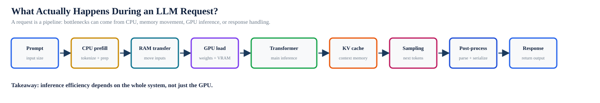
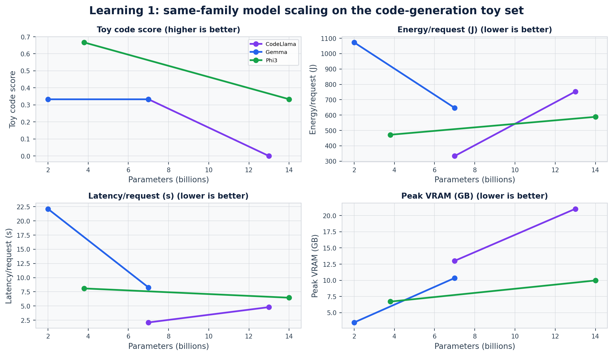
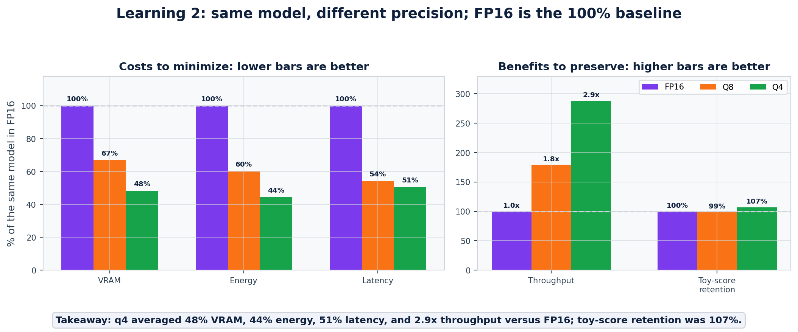
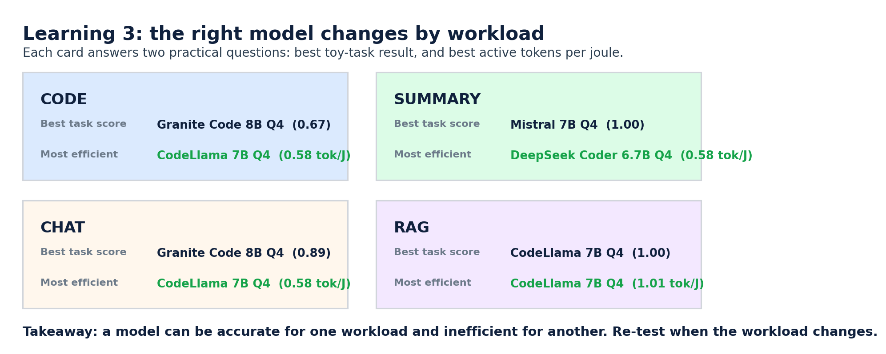

Py
PyCon US
Poster Session
Poster Session
Which LLM Should I Run?
Cost, Energy & Infrastructure Tradeoffs for Python Developers
Python scripts + Ollama + Hugging Face models + NVML + pandas + matplotlib
Overview
Everyday LLM calls look simple from Python, but the real deployment decision is a tradeoff between quality, latency, VRAM, energy, and cost.
We benchmark code generation, summarization, chat, RAG-style search, and embeddings across model sizes, quantization levels, architectures, and CPU/GPU configurations.
How to read this poster: choose along three axes: model size, quantization, and workload/system fit.
Benchmark Scope
19models / variants
5workload families
234metric rows
L40SNVIDIA L40S
| Question | Measured Signals | Why It Matters |
|---|---|---|
| Bigger model? | toy score, latency, joules, VRAM | find diminishing returns |
| Quantize? | q4/q8/fp16, tokens/J | fit smaller hardware |
| Which workload? | task score by model | avoid one-model thinking |
Measurement Pipeline
Fixtures
Repeatable prompts and document sets for each workload.
Client
Ollama/OpenAI-compatible adapter writes one tidy metric row per request.
Energy
NVML samples GPU watts, utilization, and VRAM; CPU uses RAPL or labeled TDP estimate.
Visuals
pandas + matplotlib turn traces into poster-ready figures.
What Happens During One LLM Request?
Takeaway: efficiency is a full request pipelineCPU + memory + GPU + response

A slow or expensive call can be caused by tokenization/prefill, memory movement, KV cache growth, GPU inference, sampling, or post-processing.
What The Numbers Mean
Toy task scoreSmall reproducible task signal. Example: 0.67 means 2 of 3 deterministic checks passed.
EnergyActive-device joules: GPU NVML draw minus idle baseline, or labeled CPU estimate.
Tokens/JGenerated or processed tokens divided by active-device energy.
InterpretationUse trends for deployment decisions; this is not a universal model leaderboard.
Learning 1
Bigger Models Have Diminishing Returns
Scaling parameters often increases infrastructure cost faster than model quality.
Takeaway: quality can flatten while joules, latency, and VRAM keep risingsame-family scaling

Score note: the quality panel is a tiny code-generation pass rate, not a claim that lower-parameter models are universally smarter. Developer lesson: bigger is not automatically cheaper, faster, more deployable, or more practical.
Learning 2
Quantization Changes the Economics of AI
4-bit models often preserve useful intelligence at a fraction of infrastructure cost.
Left = costs to minimize; right = benefits to preserve% of same-model FP16 baseline

Takeaway: quantization is not just a speed trick. It can move a model from “needs a large GPU” to “fits a smaller/cheaper deployment,” while toy-task scores usually stay in the same range.
Learning 3
No Single Model Wins Every Workload
The efficient model depends on whether you are doing code, summaries, chat, RAG, or embeddings.
Takeaway: best score and best efficiency can be different modelssame hardware, different workload

Read each card as a deployment choice: the first line is the highest toy-task result, the second line is the model that produced the most active tokens per joule.
System Proof Point
Takeaway: hardware changes practicality once throughput mattersCPU-only vs GPU

| Workload | Latency Shift | Result |
|---|---|---|
| Chat | 15.4s CPU → 1.0s GPU | 15.4x faster |
| Summary | 17.7s CPU → 1.1s GPU | 16.6x faster |
| Code | 22.6s CPU → 2.1s GPU | 10.8x faster |
| RAG | 4.2s CPU → 1.2s GPU | 3.4x faster |
How To Choose
| If You See... | Choose... |
|---|---|
| quality barely improves but joules rise | smaller model |
| VRAM is the deployment constraint | q4/q8 variant |
| workload changes | re-benchmark; do not reuse one winner |
| concurrency grows | GPU/batching path |